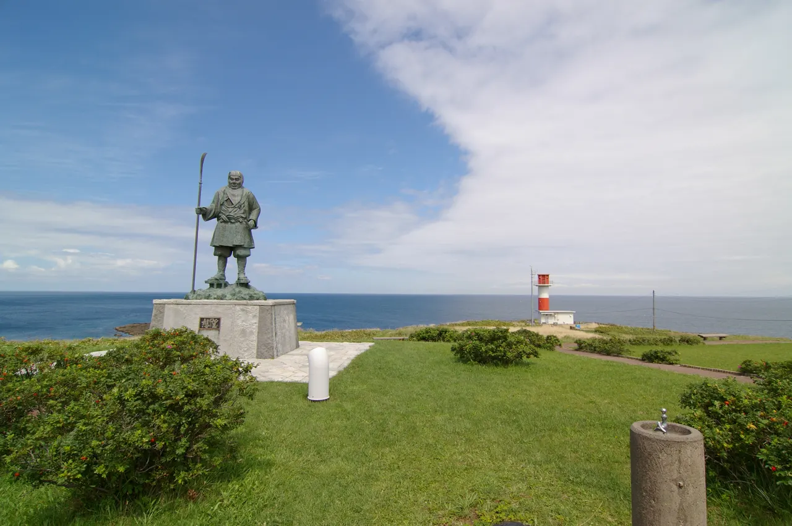
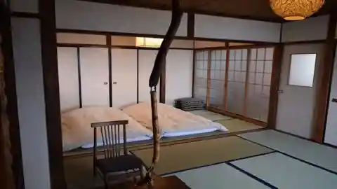
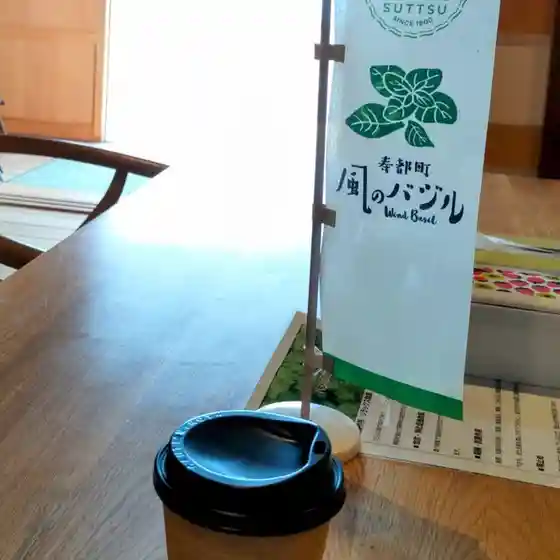
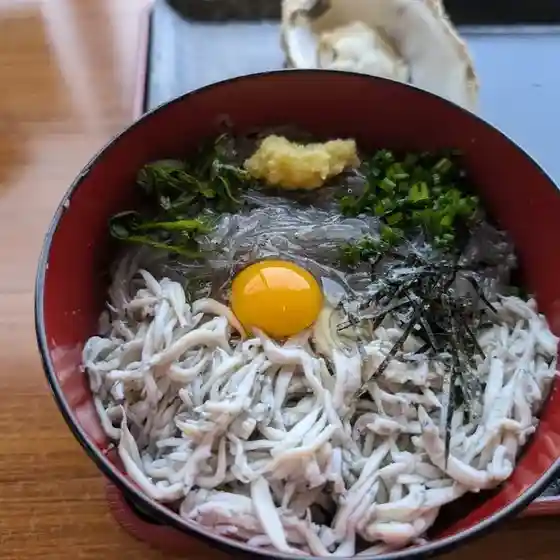
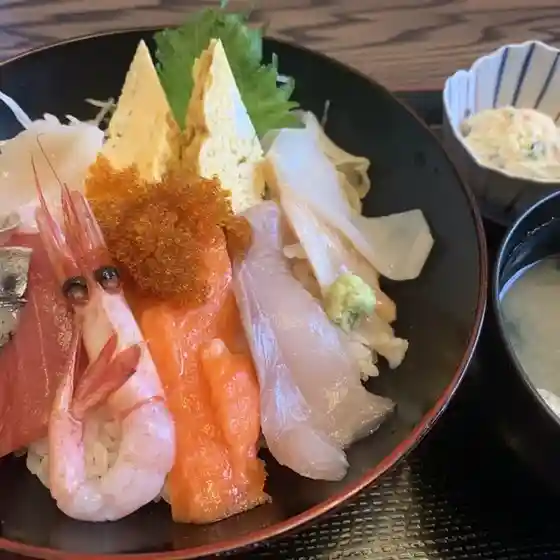
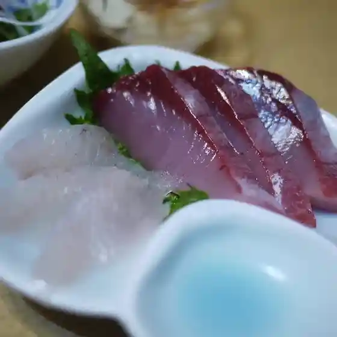
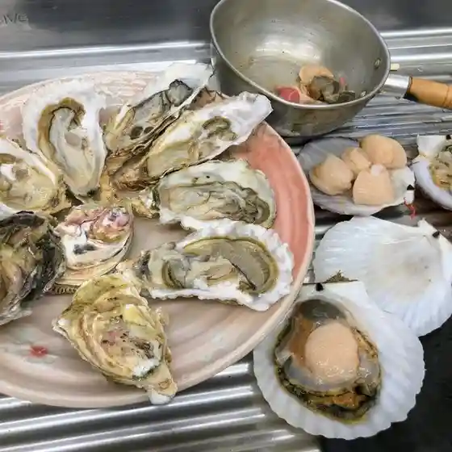
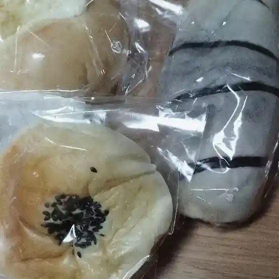
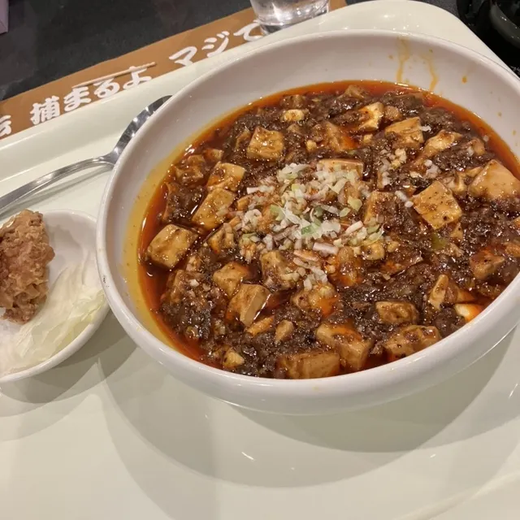
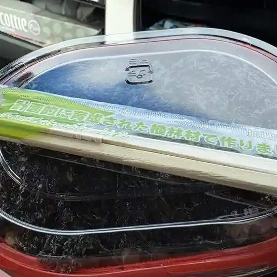

Suttsu
Suttsu · Hokkaido
Suttsu
Highlighted on the Hokkaido map.

Stay
Minpaku sei 青

Minpaku Sei
Private guesthouse in Suttsu, Hokkaido.
Dining
シーニックカフェ

Shiinikkukafe
すっつしらす会館

Suttsushirasu Kaikan
かっぱ

Kappa
ペンションメロー

Penshonmeroo
カネサ漁業

Kanesa Gyogyou
ベーカリー寿

Beekarii Hisashi
いこい飯店

Ikoi Hanten
道の駅 みなとまーれ寿都

Michi No Eki Minatomaare Suttsu
鳥清
Tori Kiyoshi
民宿みはら
Minshuku Mihara
寿都湾 元祖 かき小屋
Suttsu Wan Ganso Kaki Koya
味処 日本海食堂
Ajidokoro Nihonkai Shokudou
セイコーマート 歌棄店
Seikoomaato Utasutsu Mise
千秋庵菓子舗
Senshuu Iori Kashi Ho
JF寿都町漁業協同組合直売所
Jf Suttsu Machi Gyogyou Kyoudoukumiai Chokubai Tokoro
若狭屋老舗
Wakasa Ya Shinise
甘寿堂
Kan Hisashi Dou
やぐら干し工房 吉野商店
Yagura Hoshi Koubou Yoshino Shouten
本田菓子舗
Honda Kashi Ho
ドライブイン ユーキナイ
Doraibuin Yuukinai
お菓子の店 だし風
O Kashi No Mise Dashi Kaze
うたすつ
Utasutsu
海辺の茶屋 ぐ～みん
Umibe No Chaya Gu ~ Min
ダイマル大谷会館
Daimaru Ootani Kaikan